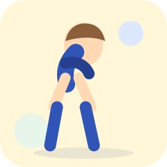
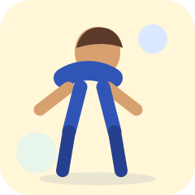
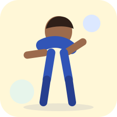
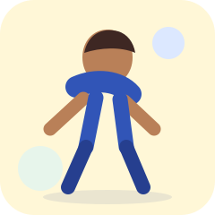
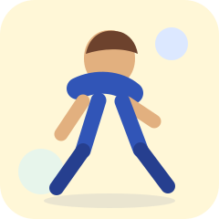
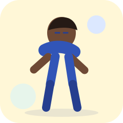

Alongamentos
Movimentos suaves e ilustrados para aliviar tensões durante o expediente.

Inclinação lateral
Leve a orelha em direção ao ombro, sem levantar o ombro. Mantenha por 20 segundos e troque o lado.

Abraço dos ombros
Cruze os braços à frente do corpo e abrace os ombros. Respire devagar por 20 segundos.

Extensão dos punhos
Estenda um braço e puxe os dedos delicadamente para baixo. Mantenha por 15 segundos e troque.

Rotação sentada
Com a coluna ereta, gire o tronco suavemente para um lado. Mantenha por 15 segundos e repita do outro.

Parte posterior da perna
Estenda uma perna à frente, apoie o calcanhar e incline o tronco levemente. Não force o movimento.

Regra 20-20-20
A cada 20 minutos, olhe por 20 segundos para algo que esteja a cerca de 6 metros de distância.
Cuidados importantes
Faça os movimentos devagar, sem insistir em posições dolorosas. As orientações são gerais e não substituem avaliação profissional.